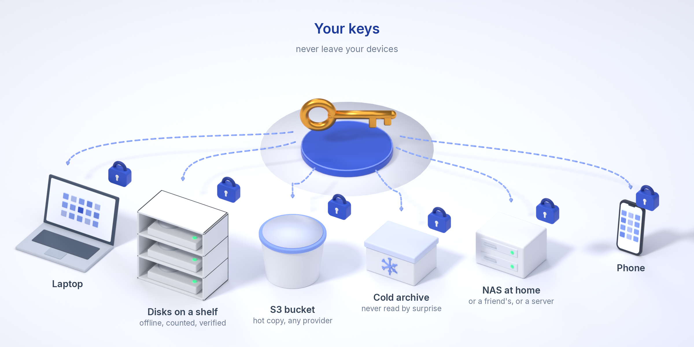

Your files. Your storage.
Varsto is an end-to-end encrypted sync and backup app that uses your own devices and storage services of your choice. A disk, a NAS share, an S3 bucket or any rclone remote; the app encrypts everything on your devices, keeps a signed record of where every block is, and lets devices that are never online at the same time stay in sync through that storage.
Download the alpha Quick start Source on GitHub

What works today (alpha, 0.0.1-alpha.9)
Encrypted before it leaves your device
Files are cut into content-defined chunks, each encrypted with XChaCha20-Poly1305 under keys derived from your vault. Storage sees opaque objects and sizes, never names, hashes or content. How it all works.
Bring your own storage
Any directory this device can reach, any S3-compatible bucket (AWS, Scaleway, Hetzner, B2, R2, MinIO) with your own keys, or any rclone remote. Cold storages and archive classes are written but never read without your confirmation.
Devices that never meet still converge
Each device keeps a signed, encrypted ledger and publishes it through the storage. Edits, deletions and conflicts resolve deterministically; concurrent edits keep both versions, deletions go to a trash.
Background app on every desktop
A tray or menu-bar app runs the service, watches folders and syncs within seconds; the interface opens in your browser, served only to this computer. One-click updates.
Selective sync, transferrer disks, untrusted replicas, sharing
Placeholders until you fetch; a USB stick that carries only what the other device lacks; a friend's NAS that stores your copies without being able to open them; a folder shared with another user by its key. See Features, Use cases and Screenshots.
Post-quantum hybrid cryptography
Every ledger batch is signed with Ed25519 and ML-DSA-65, and both must verify. A share token is sealed to the recipient's X25519 + ML-KEM-768 key, so it can travel over any channel. Old Ed25519-only batches stay valid through the algorithm identifier they carry.
An assistant with limited access
An MCP server lets the AI assistant of your choice read, analyse and reorganise files in exactly the folders you grant, read-only unless you say otherwise. Varsto itself tracks when files were last used and suggests where idle data is cheapest to keep.
Policies that warn in time
"Two cloud copies and one at home, verified within 30 days." Every device checks it from the ledger and warns, in the app and by notification, before it stops being true.
Peer-to-peer, compressed
Your devices exchange encrypted blocks directly, torrent-style: on the LAN automatically, across the internet through NAT with hole punching, and through one of your own reachable devices when punching fails. No trackers, no vendor relay. Blocks are compressed before encryption, so every copy and transfer is small. Measured between Paris, Amsterdam and Warsaw against an S3 bucket: Benchmarks.
Strongroom folders
A folder whose key exists only while you touch your FIDO2 security key. Cryptographic, not a dialog: no passphrase, vault key or stolen laptop opens it.
Old disks as a pool
Plug a disk into the dock, add it to the pool, and it fills with what the pool lacks until its reserve. Eject when told, keep it anywhere; when it comes back it is recognised by its marker, checked and topped up. A file whose only copy is on a disk that is away says so: "attach disk data-01 (shelf)".
Bookkeeping you can check
varsto fsck --verify compares the ledger with what the storage actually holds and re-hashes every object. A device restored from an old backup is detected and fenced.
What is designed but not built yet
iOS, wider NAT testing
The iOS build on real devices is next. NAT traversal is built but tested on localhost and the maintainer's own networks only; a vault with every device behind NAT still has no path across the internet.
Honest status
- The alpha is a first vertical slice: core library, CLI, background service, tray and menu-bar shells, Android shell, about 15 000 lines, 59 automated tests including two-device offline convergence, conflicts, a restored-device fence, replicas, sharing, policies, peers, Strongrooms and disk pools. Use it with test data only.
- The cryptographic design has not been reviewed or audited. The threat model and the failure model say what the design intends and where it stops.
- The source is public at github.com/janttsu/varsto under the PolyForm Shield License 1.0.0 (source-available, not open source); bugs and questions go to the issue tracker there. The storage format is documented so that your data stays recoverable.
- The name is provisional and the site is kept out of search engines until it is settled.
Downloads
No binaries are published yet. Build from source with cargo build --release.
Verify a download: the checksum list is signed with the Varsto release key (see "Verify your download" above): varsto verify-release <file> --github, or minisign and sha256sum -c SHA256SUMS --ignore-missing. varsto update checks the signature and the GitHub release by itself.
Latest from the blog
- Alpha.9: data where you want it, repair by itself, signed updates, and every platform built in the open
Folders can be placed on chosen storages and moved between them, lost copies are repaired automatically, updates are signed with an offline key, peer-to-peer downloads fetch many blocks at once, and every package is now built, tested and photographed on GitHub's runners. - Alpha.8: a ledger that stays small, removable devices, and phones that keep nothing in clear text
The ledger now lists only what is new, keeps a cached view and prunes itself behind signed checkpoints; devices can be removed with new keys for everything written afterwards; phones keep encrypted folders as encrypted blocks; and the interface shows where your data is and how peer-to-peer traffic flows. - Alpha.7: pair devices with a code, Finder actions, and a real NAT path
Devices now pair from the interface with a one-time code, Finder can download a placeholder or free up space with a right-click, the macOS app installs from a disk image, devices reach each other through NAT, and removable disks can form a pool. - Alpha.6: the source is public, and every platform builds in the cloud
The repository is now public on GitHub under the PolyForm Shield licence, the native macOS and iOS apps build on GitHub Actions, Linux, Windows and Android build on short-lived cloud machines, and the interface was redone around a file view. - Alpha-0: the first vertical slice
A command-line tool that encrypts, stores and syncs a folder between two devices through storage you own, with a signed ledger you can check.